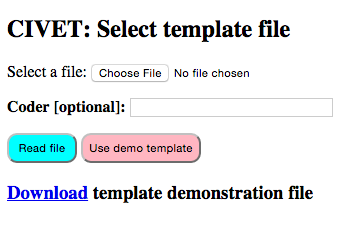

Home Page Options¶
The home page has the following links:
- Read coding form:
- CIVET reads a coding form template without using a workspace: this is used if you want to use the web coding form without annotated texts. This option can also be used when debugging coding forms.
- Read workspace:
- CIVET reads a set of text collections and their associated coding form from a zipped file: this mode allows for text annotation and extraction and is described in more detail in Section [sec:workspace], [sec:annotate] and [sec:coding].
- Manage workspace:
- This links to various utilities that operate on workspace files including downloading the coded data as a tab-delimited file, editing the meta-data, and adding comments to the file. [Beta 0.9: only the data download is implemented; editing the meta-data can be done in a text editor.]
- Set preferences:
- This goes to a page where various program preferences can be set manually.
Documentation
- On-line manual
- Links to an HTML version of the documentation
- Download PDF
- This downloads a PDF file with the documentation.
- Log out
- Log out the current user. You will only see this option if log-ins are required: see the chapter on “Authentication.”
File selection¶
The first three modes go to a file selection screen.

CIVET file selection screen
This provides the following options:
- Choose file:
- Select a file containing a coding form template or workspace, then
read this into the system by clicking the
Read filebutton. - Coder:
- Any text entered here—typically a coder name or ID—will be included as metadata with any annotations or cases coded. This field is optional.
- Demo file:
- Read the simple demonstration files built into the system. [1]
- Download demonstration file:
- This downloads a template or workspace demonstration file, which can be used as an example.
Footnotes
| [1] | These files are named CIVET.demo.template.txt and
CIVET.extract.demo.zip in the directory
djcivet_site/djciv_data/static/djciv_data/ and can be modified
there. |